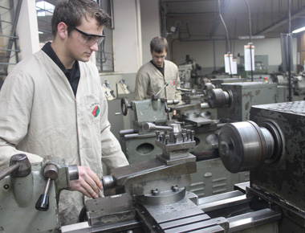

Nossos cursos
Para garantir a maior qualidade possível de ensino, mantemos nossa grade curricular atualizada, e com cursos que fazem a diferença na carreira profissional.
Com o curso técnico em Desenvolvimento de Sistemas, o profissional formado tem capacidade de desenvolver, testar, implementar e corrigir os diversos tipos de sistemas computacionais de informação.
Com o curso técnico em Mecânica, o profissional formado estará apto e capacitado a desenvolver e melhorar tecnologias, podendo identificar, planejar e integrar sistemas mecânicos.
Com o curso técnico em Química, o profissional formado pode atuar no controle e monitoramento de processos industriais, garantindo a qualidade de insumos e produtos.